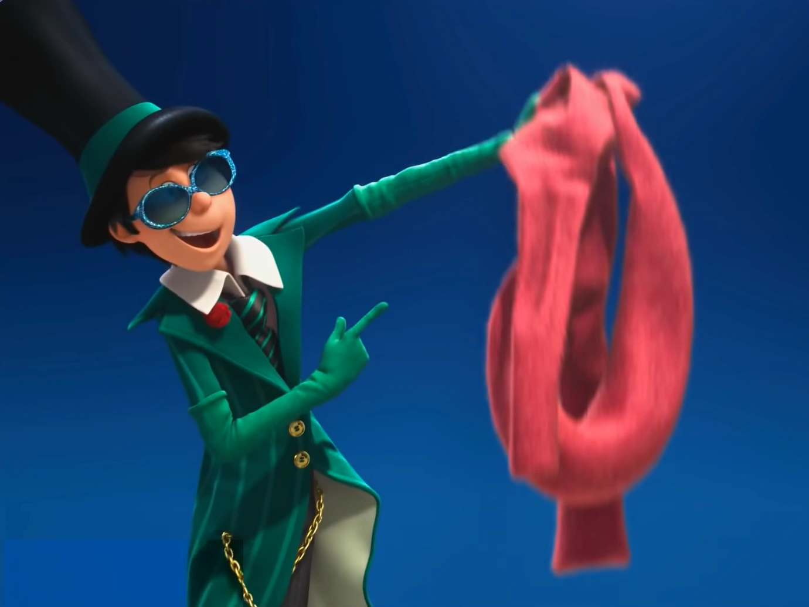
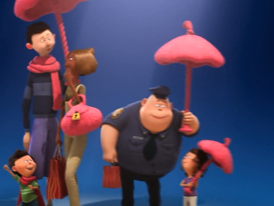
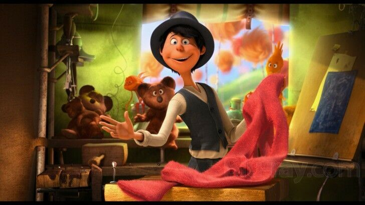

Everybody Needs a Thneed:
The Case for Universal Thneed Ownership
In the whimsical world of *The Lorax*, the Thneed is presented as a seemingly indispensable product. Its promotion in the movie and the song "Everybody Needs a Thneed" cleverly reflects both satire and societal critique. The Once-ler, a young entrepreneur, uses the Thneed to symbolize innovation and consumer demand. His efforts to market it reveal the powerful allure of advertising and the human tendency to over-consume, regardless of actual necessity. By exploring the product's universal appeal, versatility, and broader implications, we can understand why the movie insists that “everybody needs a Thneed.”
First and foremost, the Thneed’s versatility is one of its primary selling points. According to the song, the Thneed can be a hat, a shirt, a sock, or even a carpet. Its adaptability speaks to human desire for multi-functional tools, products that simplify life by offering more than one use. The Once-ler capitalizes on this concept, emphasizing the Thneed’s ability to meet a wide range of needs. In the movie, the townsfolk are swayed by this promise, mirroring real-world marketing strategies that equate a product’s value with its variety of functions. The Thneed’s appeal lies not only in what it is but also in what it represents: convenience and efficiency.
- Hat
- Super Trendy
- Tightrope for an Acrobat
- Net for catching Butterflies
- Or used for Exercise
- Shirt
- Sock
- Carpet

Additionally, the song highlights the emotional connection that the Once-ler builds around the Thneed. He doesn’t merely advertise it as a product but positions it as a necessity for happiness and belonging. The catchy tune "Everybody Needs a Thneed" suggests that owning one is a social imperative, creating a sense of FOMO (fear of missing out). This reflects modern consumer culture, where products are marketed as essential to fitting in or achieving a desirable lifestyle. The Once-ler’s song transforms the Thneed from a mere object to a symbol of identity and status, making it irresistible to his audience.

View a photo of a locally-produced Thneed!
Share this catchy phrase with your friends, "Everybody needs a Thneed!"
Watch this video to hear the story of how the Thneed became what it it today!
Play this interactive game, Lorax Frogger (using the WASD keys) to simulate avoiding thieves aiming to steal your Thneed because they need one!
Some studies show that locations without Thneed ownership experience more frequent rat sightings, utilize this graph to learn more about such potentially lack-of-Thneed-correlated sightings!

Return to top